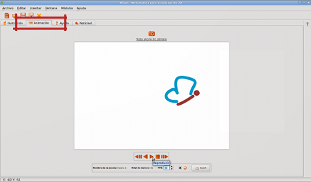

Veamos cómo está quedando
Muy bien, ya tenemos la mitad de los marcos de nuestro proyecto terminados. Es momento de aprender a utilizar el Módulo de Animación. Vale la pena decir que no hay una regla general acerca de cuantos marcos debes crear antes de hacer una previsualización de tu proyecto, esta es otra habilidad que desarrollas a partir de la práctica, en otras palabras: tú escoges.
|  |
Fig #n. Vista previa del proyecto desde el Módulo de Animación
Adicionalmente, ten en cuenta que realizar una previsualización de tu animación no afecta tu proyecto en lo absoluto, por lo tanto, podrás ingresar a este módulo tantas veces como así lo desees, lo verdaderamente importante es que lo aproveches para detectar que tan a gusto te sientes con el resultado final y que puedas corregir los errores que descubras a tiempo.
La interfaz de previsualización es bastante sencilla, así que no hay nada de que preocuparse. El panel de botones contiene todos los controles necesarios para hacer una previsualización de tu animación, paso a paso o de manera contínua.
Tip: La opción "Repetir" es bastante útil si tienes pocos marcos y quieres tener una apreciación más precisa acerca de la fluidez de tu proyecto y puedes activarla o desactivarla cada vez que lo desees.
Muy bien, ahora es momento de seguir dibujando nuevos marcos hasta cumplir con todo el recorrido propuesto en el guión. Regresa a la sección anterior, y termina con todos los gráficos pendientes. Es probable que te parezca desgastante tener que dibujar las mismas partes de ciertos objetos o personajes una y otra vez, y estamos de acuerdo contigo. Es por esto que nos encontramos trabajando en una funcionalidad llamada "Tweening", que sirve para ahorrarte mucho tiempo al momento de ilustrar y que esperamos tener lista muy pronto.
Ya terminaste de crear todos los marcos? te gusta lo que ves en Modulo de Animacion? Muy bien, es hora de crear tu archivo de video!